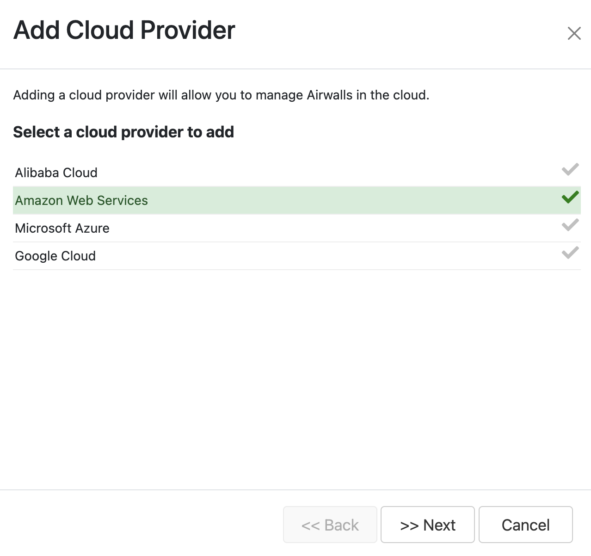
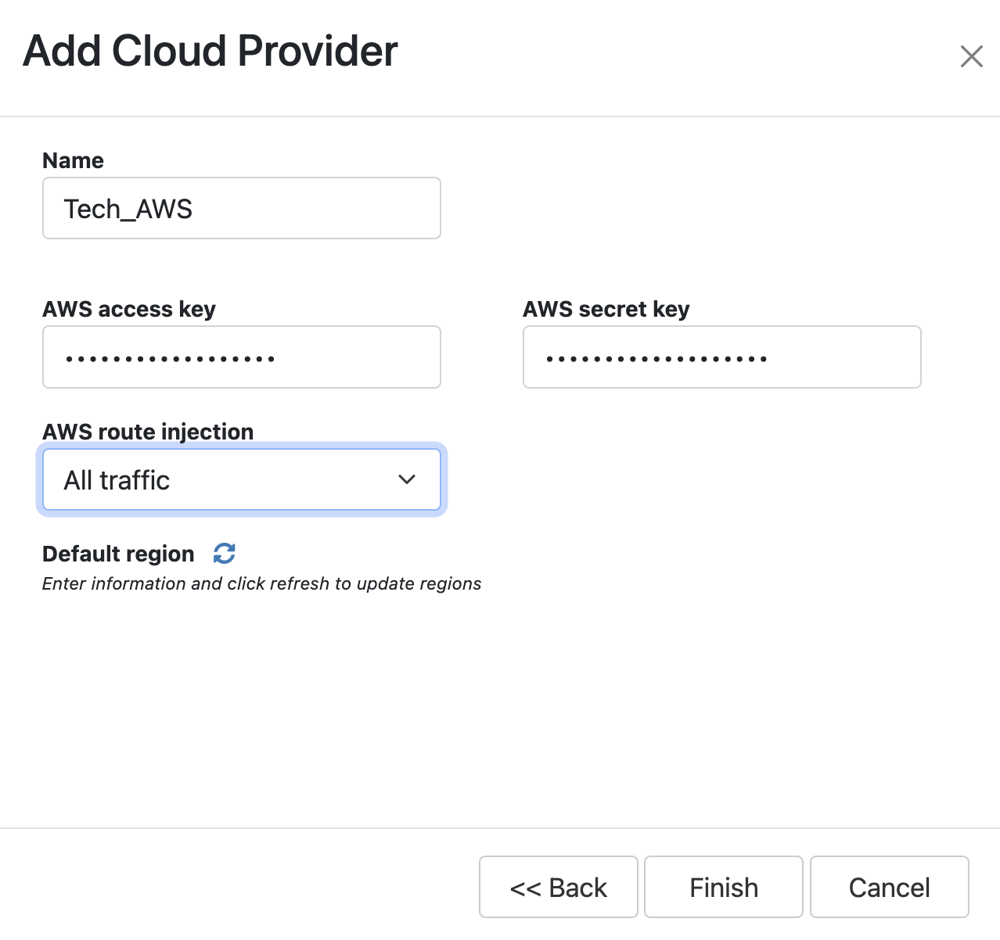
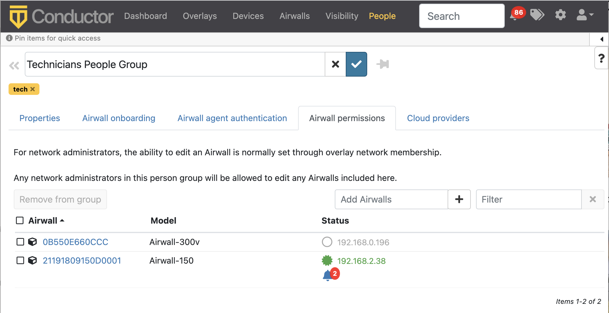

Customize People's Access to your Airwall secure network with People Groups
Using people groups, you can control what the people in the group can see and use on the Conductor, including cloud providers, Airwall Gateways, and Overlay networks and resources.
This control allows you to host several departments or customers on a single Conductor, where they have control over their own networks and access, but cannot see other networks or resources that are hosted on the Conductor.
- Supported versions
-
- v3.1.0 Conductors
- All Airwall Edge Services
- Supported Roles
- To set access with People groups, you must be a system administrator
You can give People groups access to Airwall Edge Services in two ways:
- Give members of the people group access directly by adding Airwall Edge Services to the Airwall permissions tab when creating or editing the people group.
- Set the people group as the permissions scope of a smart device group (SDG), so only devices from those Airwall Edge Services can be added to the SDG.
To support least-privileged access, you can set finer controls on what users have access to:
- Lock an Airwall Edge Service
- Remove permissions to Relay rules – This option can be important for privacy on a shared Conductor.
- Limit the permissions scope for Smart device groups
- Manage Tag Ownership – In v3.1.0, tag ownership is more restrictive by default. If a system administrator creates a tag, then by default, only system administrators can see or use them. If a network administrator creates a tag, ownership defaults to only them or their people group, and system administrators.
Give Access to Cloud Providers with People Groups
- In the Conductor, go to People, and open the People groups tab.
- Open an existing people group, or select New People Group to create a new one.
- Open the Cloud providers tab.
- Select Add Cloud provider.
- Select the cloud provider on which you’d like this people group to be able to create and manage Airwall Gateways on your Airwall secure network.
-
Select Next.

-
Enter a name and the credentials for the selected cloud provider.

- Select the Cloud route injection option and Default region for this people group to use.
- Select Finish.
Give Access to Airwall Edge Services with People Groups
- In the Conductor, go to People, and open the People groups tab.
- Open an existing people group, or select New People Group to create a new one.
- Open the Airwall permissions tab.
-
In the Add Airwalls box, enter a search term, or select
the + to choose which Airwall Edge Services you want the members of this people group to have access to.

- Select Finish.
Give Access to Overlay networks and Resources
You can give access to overlay networks and resources using people groups. When you give the people group the user role on an overlay network, the members of the group can use the overlay to add and remove devices and change trust, but they cannot edit the overlay network configuration and they do not gain permissions to edit the Airwall Edge Service in the overlay network. For more information, see Overlay network access roles.
- Create a people group and add the people you want to be able to see an overlay network in the Conductor.
- Create or open an ∫ network.
- On the right, under Network members, select Update.
- On the Add network members page, for the people or people group you want to give user access to, check the Users column.
-
Select Close.
The selected people or people group now can add and remove device groups and change trust policy on the overlay network.
Overlay network access roles
There are several roles people can have on an overlay network. Refer to this table for what overlay permissions each role grants.
|
Overlay Permissions |
Overlay Role | ||
| Viewer | User | Editor | |
| View the overlay | X | X | X |
| Add and remove devices | X | X | |
| Change trust policy between devices | X | X | |
| Edit overlay network configuration | X | ||
| Edit Airwall Edge Services in the overlay network. | X | ||